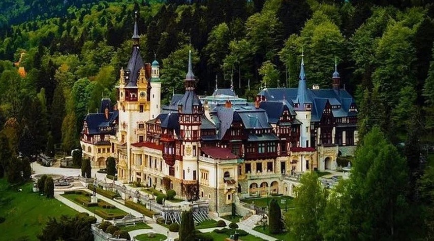
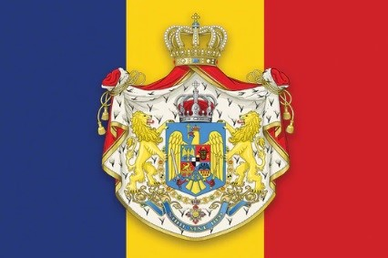

The earliest inhabitants of Romania were stone age hunters who lived about 8,000 BC. In time the people of Romania learned to farm and then they learned to make bronze tools.
Eventually, they learned to use iron. From about 600 BC the ancient Greeks traded with the people they called Getae. They founded settlements on the coast of Romania.
The Romans called the people of Romania Dacians. In 101-102 AD the Roman Emperor Trajan led a campaign against the Dacians. A further campaign was fought in 105-106 AD and the
Romans crushed the Dacians at the battle of Sarmizegetusa. Afterward, Dacia became a Roman province. Settlers from other parts of the Roman Empire were
brought in and the local people became ‘Romanized’. They began to speak Latin.
However Roman rule was short-lived. In the 3rd century, the cost of defending Dacia from ‘barbarians’ became too great.
In 271 Emperor Aurelian withdrew the Roman Empire south of the Danube.
Medieval Romania
Waves of migrants then came to Romania. In the 5th century came the Huns. In the 6th century, they were followed by the Avars and in the 7th century Slavs.
Romania then gradually settled down and a feudal order emerged.
Meanwhile, in the 10th century, a fierce people called the Magyars (ancestors of modern Hungarians) arrived in Transylvania. By the 13th century, the Hungarians
ruled Transylvania although it was allowed some autonomy, and the Hungarian kings persuaded Germans to go and live there. However, although the inhabitants of
Transylvania were Magyars or Germans most of the population were Romanian peasants.
Then in the 14th century, Radu Negru (1310-1352) united some Romanians and formed the first Romanian principality, Wallachia. Later in the 14th century another
principality, Moldavia was formed. Most of the peasants became serfs (halfway between slaves and freemen). They were ruled over by aristocrats called boyars.
Then during the 15th century, a new threat came from south of Romania – the Turks. Both Wallachia and Moldavia fought the Turks and the notorious Vlad the Impaler
lived at that time.
Renaissance Romania
In the 16th century, Transylvania became part of the Turkish Empire (although it was still allowed some autonomy). However, for a time Wallachia and Moldavia managed
to remain independent of Turkey.
In 1593 Michael the Brave became ruler of Wallachia. In 1595 he fought and defeated the Turks. In 1599 he defeated the Transylvanians and became prince
of Transylvania. In 1600 he conquered Moldavia and made himself its prince. However, Michael was killed in 1601 and the union ended.
In the 17th century, Wallachia and Moldavia came to be dominated by the Turkish Empire. In the 18th century, they had puppet rulers under Turkish control.
In 1683 the Turks were defeated at Vienna and in 1687 the Habsburgs (rulers of Austria) took Transylvania. Although some of its people were Magyars or Germans most
were Romanian peasants. Their harsh treatment led to a rebellion headed by three serfs called Horea, Cloxa, and Crisan. The rebellion failed but in 1785 the Hapsburg
Emperor abolished serfdom in Transylvania.
During the early 19th century Turkey continued to dominate Wallachia and Moldavia. However Turkish power was weakening. In 1859 the two principalities were united
under a single prince called Alexander Ioan Cuza. In 1862 the new state was named Romania. Finally, in 1877 Romania declared its independence from Turkey.
Modern Romania
Modern Romania n Cuza carried out reforms in Romania including abolishing serfdom. However, he was unpopular with conservatives and in 1866 he was overthrown.
Prince Carol replaced him. In 1881 Romania became a kingdom with Carol I its king.
In 1916 Romania joined Britain and France and Russia against Germany and Austria-Hungary. In 1918 Romania took Transylvania from Hungary.
Bessarabia, which was taken by the Russians in 1812 became part of Romania again. As a result, Romania increased greatly in size and its population
increased from about 7.5 million to about 12 million. In 1920 the Western powers recognized the changes by the Treaty of Trianon.

In 1927 the right-wing Legion of the Archangel Michael, better known as the Iron Guard was formed in Romania. The 1930s were an era of political instability
in Romania with many different governments. Finally, in 1938 the king banned political parties and introduced a royal dictatorship in Romania.
In 1940 Stalin forced Romania to surrender the eastern province of Bessarabia to Russia. Furthermore, Hitler forced the Romanians to give Northern Transylvania to
Hungary and to give other territories to Bulgaria. As a result of giving away so much territory, King Carol became very unpopular and he was forced to abdicate in
favor of his son Michael.
However, Michael had little power. Marshal Ion Antonescu made himself a fascist dictator of Romania and he called himself Conducator or leader. In June 1941
under Antonescu Romania joined the German invasion of Russia, partly to regain Bessarabia.
During the Second World War Jews and Gypsies from Romania were deported and murdered. n However from 1943 Germany was losing the war. Finally, on 23 August 1944
Antonescu was removed in a coup. Romania then changed sides and declared war on Germany. By the end of October 1944 Germans and Hungarians were driven out of
Transylvania, which became part of Romania again.
However after the war Russian troops were stationed in Romania, which made a Communist takeover inevitable. (The Russians also took Bessarabia again).
In November 1946 elections were held in Romania and the left-wing parties did well. The Communists took key posts and in December 1947 the king was forced
to abdicate. In February 1948 other left-wing parties merged with the Communist Party and a totalitarian regime was introduced in Romania. Industries were
nationalized.
Meanwhile, Antonescu was shot as a war criminal in 1946. Thousands of other Romanians met the same fate.
Russian troops withdrew from Romania in 1958 and after 1960 Romania adopted an independent foreign policy. In 1965 Nicolae Ceausescu became ruler of Romania.
Although Ceausescu had an independent foreign policy he ruled Romania with a rod of iron. Ceausescu was determined to increase heavy industry in Romania but ordinary people
suffered abject poverty. They also suffered terrible repression.
The Communist regime in Romania suddenly collapsed in 1989. In December demonstrations took place in Timisoara. On 21 December Ceausescu was booed by a crowd in Bucharest
and demonstrations followed. The next day Ceausescu appeared on the balcony of the Central Committee Building but he was forced to escape by helicopter. Ceausescu’s fellow
Communists deserted him and he was arrested. He and his wife were shot on 25 December 1989.
Romania then faced a difficult transition from Communism to democracy and a market economy. A body called the National Salvation Front took control and in May 1990 it won
elections. It won further elections in 1992. However, in 1996 Emil Constantinescu, head of the right-wing Democratic Convention of Romania won the presidential elections.
He was replaced by Ion Iliescu in 2000.
Romania joined NATO in 2004. Romania also joined the EU in 2007. Romania suffered badly in the recession of 2009. However, Romania recovered from 2011. Today the economy
is growing steadily. In 2020 the population of Romania was 19.2 million.
